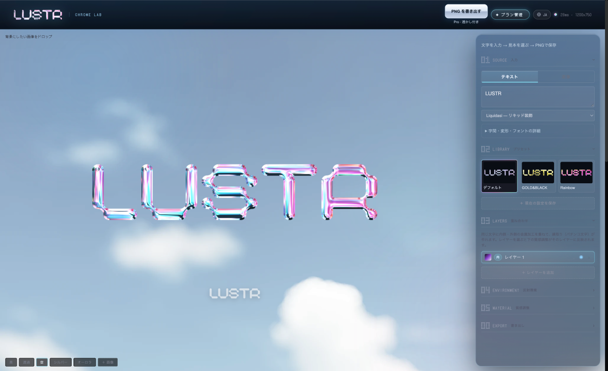
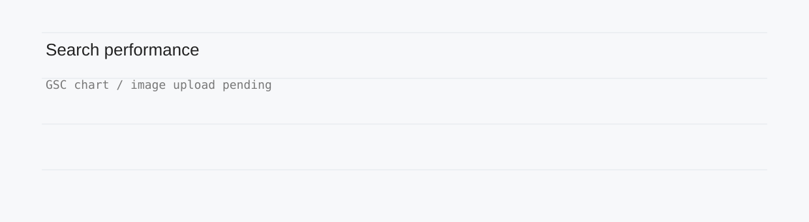

~/portfolio/works/product/lustr
LUSTR
ブラウザで使えるクロムテキストジェネレーター

01_context/
高品質な金属文字を作るには、
複数のソフトが必要だった。
problem
Photoshopとプラグインの導入コスト、加工後の色調整や重ね合わせなど、複数の工程にまたがる制作負荷が課題だった。
02_design-decisions/
High fidelity. Less friction.
fidelity
表現品質を妥協しない
金属特有の質感を再現するため、文字表面に光沢テクスチャを重ね、ベベルによる立体的な膨らみとハイライトを加えた。環境反射も組み合わせ、ブラウザで豊かな質感を表現した。

integration
制作工程を一つにまとめる
複数のソフトを行き来する制作フローを見直し、質感調整とレイヤー合成を一つのブラウザ環境に統合した。
before
Photoshop→Plug-in→Photoshop
文字・素材準備 → 質感加工 → 色調整・合成
after
LUSTR→Export
Input → Material → Layers → Export
control
表現の自由度を確保する
プリセットだけでは難しい細部の編集に対応するため、フォント選択、カーニング、押し出しなどを用意した。
feedback
試行錯誤を容易にする
パラメータ変更の結果をその場で確認し、変更・確認・再調整を繰り返しやすいプレビュー体験を設計した。
03_outcome/
公開後の実績
search clicks582source: GSC
active users1,125source: GA4, period: 30 days
export actions1,432source: GA4, period: 30 days
search performance

Google Search Console: 検索流入の推移。画像は保存済みの実測グラフ。
positioning: 専用の入口
「パチンコ文字」を作りたい人のための専用ページを、2026年8月末〜9月初頭に公開。
distribution: 自分で発信
noteに自分で記事を投稿し、検索以外からもLUSTRを知ってもらう接点を作った。
集計期間が異なるGSCとGA4のデータを併記しています。施策と検索流入増加の因果関係は未検証です。